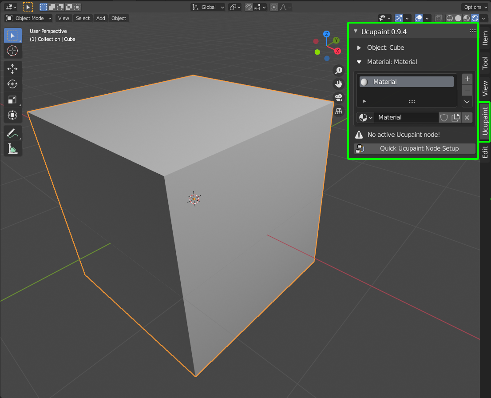
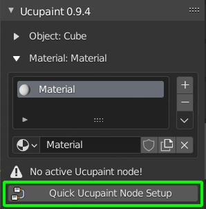
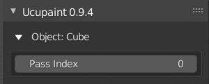
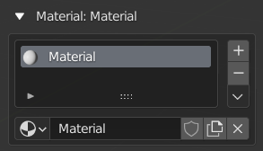

User Interface
Assuming that we have installed the addon, the UI will be available in the blender side panel when we selecting a textureable object.

*the UI only available on 3D Viewport and Shader Editor
At first, The UI will be showing a standard content. that is the selected object and material list.
Before we start using UCUPAINT, we need to setup it first. the setup process is very easy, just press the quick UCUPAINT node setup button.

Subpanel UI
Object

Object information displayed selected object name and have editable properties 'Pass Index', Pass Index properties refer to Object Pass Index.
Material

Material subpanel have shortcut for accessing the material list of the selected object. We can add, remove and do another material operation in this subpanel, just like in the original menu().